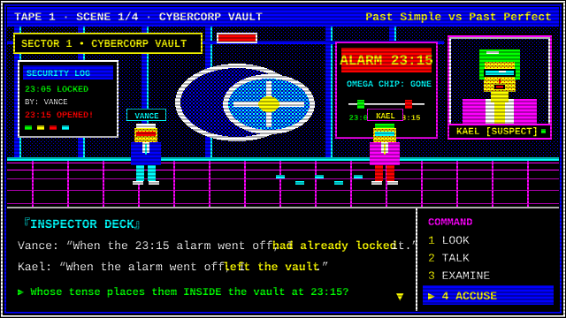
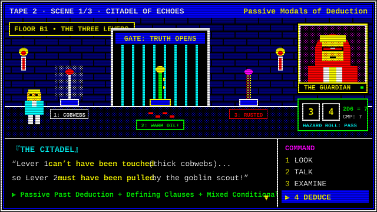
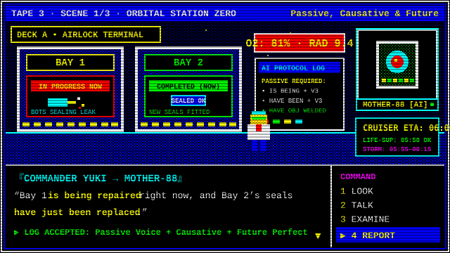
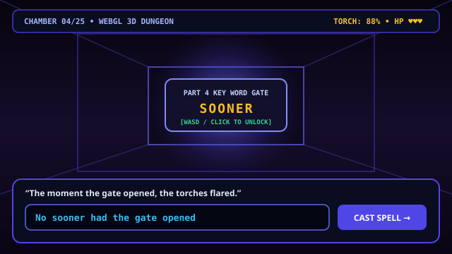
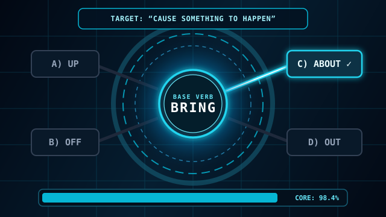
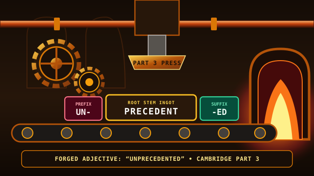
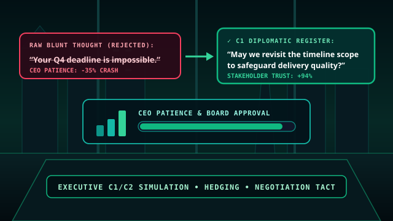
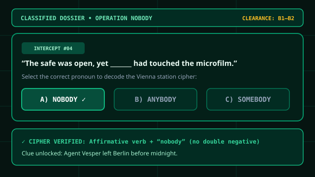
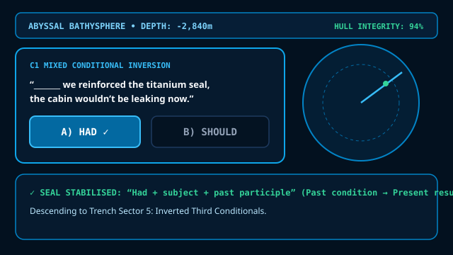

Don’t just memorise English rules. Practise them live.
Interactive grammar games, detective mysteries, timed essay builders, and a 15-lesson Gothic & Victorian literature course for Cambridge C1/C2 and IELTS.
Why I built these: Gap-fill worksheets rarely prepare you for thinking under exam pressure, so I built my own interactive games, essay builders, and literature lessons for my students. Most are free to use right here in your browser.
Try 5 free Gothic & Victorian lessons or unlock the full 15-lesson C1/C2 course (£24).
Crack a mystery with B1–B2 grammar in a detective adventure across 3 episodes.
Choose B2 First, C1 Advanced, C2 Proficiency, or IELTS—plus grammar games.
Master C1/C2 English through classic Gothic & Victorian literature.
Read original scenes from five classic novels with British narration (synthetic voice), period paintings, and 225 practice questions (including 75 Part 4 Key Word Transformations). Try the first lesson of each book free, or unlock all 15 for £24.
Have a backup access code? Unlock another device
Stripe checkout automatically redirects back to unlock this browser. To unlock a second device (phone or tablet), enter your backup code below:
Need help? Email me your Stripe receipt.
“Gareth is a fantastic teacher who always comes well-prepared to his lessons. He helped me prepare for the Cambridge C2 Proficiency exam, which I managed to pass with flying colours thanks in large part to his guidance and support.”
“Gareth helped me prepare for my C1 Advanced exam, which I passed. His lessons were never boring and he kept me focused on my goal, which made a real difference.”
“The road was closely surrounded by dense pine forests and received very little sunlight.”
Chronicle ’88: Crack the case with English grammar
An 80s-style detective adventure where grammar is how you solve the mystery. Question suspects, work out whose alibi doesn’t add up, and roll the dice when things get risky across three playable episodes.

Neon Alibi 1989
A microchip is stolen at 23:15. Question suspects by spotting the timeline difference between Past Simple, Past Continuous, and Past Perfect alibis.

The Citadel of Echoes
Inspect old levers with modals of deduction (must have / can’t have), solve relative-clause riddles, and talk your way past the Guardian.

Signal Lost at Station Zero
Stranded on a space station where the ship’s computer only accepts accurate passive sentences, causative repair orders, and future perfect updates.
Grammar and vocabulary games to play between lessons.
Quick games and story-based worlds for the parts of English that need repetition: inversions, phrasal verbs, word formation, conditionals and polite professional phrasing. No sign-up.
 Syntax Game
Syntax Game
Grammar Crypt (2D Edition)
Climb 25 floors by building correct sentences from word-runes with gentle hints.

3D EngineGrammar Crypt (3D Dungeon)
3D WebGL dungeon exploration with Cambridge Part 4 syntax challenges.

B2–C2 VerbsPhrasal Verb Reactor
Choose the right particle for each phrasal verb before the core overheats.

Part 3 MorphologyWord Factory (Morphology)
Add the right prefix or suffix to root words before the conveyor belt runs out.

Workplace C1/C2The Boardroom Pitch
Turn blunt thoughts into diplomatic C1/C2 English for meetings and client pushback.

B1–B2 BespokeOperation Nobody: Spy Mission
Sample 1-to-1 lesson built around spy riddles and indefinite pronouns.

Conditionals C1Abyssal Bathysphere
Practise mixed conditionals and inversion inside a deep-sea research vessel.
Phraxos: The Bourani Godgame (3D)
Inspired by Myst & The Magus: explore three Aegean headlands and unmask Conchis’s illusions with C1/C2 syntax.
Cambridge & IELTS Exam Lab
Interactive exam practice modules built around the published Cambridge University Press & Assessment and IELTS marking criteria. Filter by your target exam below:
The 5 Essay Types Masterclass
Recognise all 5 Task 2 question types in 30 seconds and build Band 8.0+ sentences interactively.
IELTS Task 1 Verbs & Passives
Replace dramatic clichés with precise trend verbs, map transformations, and passive participle clauses.
True Friends & Conditionals
Practise 8 compound personality adjectives, conditional linkers, and a Part 4 workout.
Interactive FCE Review Deck
An interactive presentation built from real college lectures to sharpen B2 exam technique and grammar.
Timed C1 Essay Builder
Build a C1 essay sentence by sentence against a 5-minute timer with live word count.
C1 Report vs Proposal Builder
Side-by-side register rules, section headings, and 6 interactive C1 upgrades.
Syntactic Research Lab & Scrubber
Paste a paragraph to flag L1 interference traps and test 5 interactive C1/C2 sentence upgrades.
C1 Part 4 Deconstructor
Interactive 20-item trainer enforcing the 4-Step “Strike Out the Echoes” method and strict 3–6 word guardrails.
IELTS & C1 Syntax Workbench
Ditch memorised Band 9 thesaurus lists and master the 5 C1 structural shifts examiners reward.
Speaking Part 2 & 3 Arc Studio
60s Margin Notepad with anti-sentence guard, 120s 3-Act Story Arc timer, and 12 cue cards with Part 3 A.R.E.A. models.
Psychometric Testing & Passives
Evaluate corporate screening arguments and practise C2 causative and impersonal passives.
Want to see how your own writing holds up against published C1/C2 & Band 8.0+ marking criteria?
Study Guides & Model Answers
Step-by-step exam guides, annotated Band 8+ / C2 model essays, and interactive classroom lessons.
Intensive IELTS 7.0+ Study Plan
A structured roadmap focusing on Writing Task 2 and Speaking Part 3, with practical homework tasks.
Task 2 Structure & Model Essay
A reliable 4-paragraph framework, band scoring breakdown, and complete sample essay with analysis.
Mastering Negative Inversion
Rule breakdowns, typical traps, and 8 exam-style key word transformations with click-to-reveal answers.
CPE Part 4: Top 10 Patterns
An audit of 87 official CPE transformations across 15 tests, with a 3-question diagnostic and 1+1 mark trainer.
50 Part 4 Patterns Checklist
Track all 50 high-frequency Cambridge Part 4 formulas across 5 categories with a 10-item live workout.
10 Mistakes at C1 & C2
From “discuss about” to “look forward to hear”: why advanced learners plateau and how to fix fossilised habits.
Speaking Part 3: A-R-E Model
Side-by-side Band 6 vs Band 8 transcripts, the A-R-E extended answer model, and natural hedging.
Part 4: 4-Step Elimination Method
Strike out repeated words, check tense harmony, and solve the C1 collocation without changing the key word.
Get the Free C1/C2 Study Pack & PDF Syllabus
Enter your email for links to my C1/C2 Negative Inversion guide, 10 Common Mistakes breakdown, downloadable IELTS/Cambridge Study Syllabus PDF, and a link to try Lesson 1 of the Gothic course (Dracula) when you have 25 minutes.
Speaking Rhythm & Stress Lab
Upgrade a B1 sentence into a C1/C2 spoken frame, listen to the British stress pattern, and record your own delivery to compare rhythm and syllable peaks.
Young Learners (ages 6–12): Professor West’s 3D Study & Pencil the Cat
Professor West’s 3D Study & Pencil the Cat
My lessons are for adults, but younger learners are welcome in Professor West’s Study: a 3D room with a short animated intro, a British storyteller (synthetic voice) and six word games with Pencil the Cat. No ads, no sign-up, and no analytics tracking.
- 4-Act Animated Intro Movie
- Interactive 3D Study & Bookshelf
- Pencil the Cat’s 6 Word Quests
- 100% Free • No Ads, No Sign-Up
Want personal feedback on your speaking and writing?
Interactive drills build strong habits, but nothing replaces an experienced exam teacher looking at your actual writing and speaking. Book a 30-minute starter session and leave with a clear, honest Band 7.5–8.5 / C1–C2 study plan.